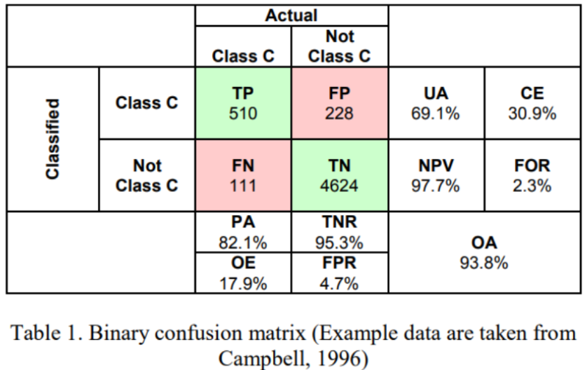
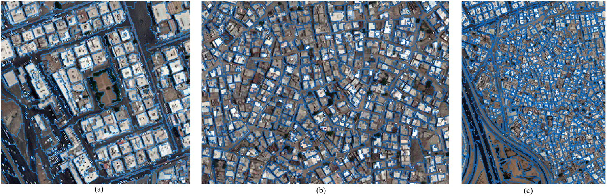
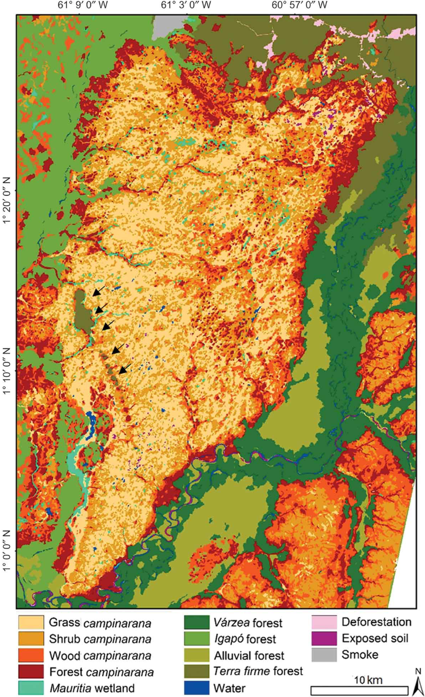

8 Classification 2
8.1 Summary
This session could be divided in two main topics. On one side (and also the one i felt was easier to understand) was continuing seeing alternatives to image classification, including some preclassified datasets like MODIS or Dynamic World. The other part (which for me was a bit difficult to understand) covered key concepts in classification accuracy assessment, cross-validation techniques, the impact of spatial autocorrelation, and spatial cross validation.
8.1.1 Alternatives to Image Classification
Dynamic World: open-access semisupervised model with already preprocessed data to obtain info on tree cover, built index, etc, that is continuously being updated. Something interesting it that it uses Convolutional Neural Networks, which is a form of deep learning that uses a moving window for classification. Some cons would be that its not too detailed, has some inaccuracies because of using TOA reflectance and lacks interpretability.
OBIA: Object based image analysis. Instead of classifying cells, segments images in meaningful shape based on similarity, called superpixels and then classifies them. It uses SLIC which is a method to refine classification that checks for homogeneity of colors and closeness to center
Subpixel analysis: recognizes that one pixel might include multiple land cover types so we could calculate the proportion of each pixel corresponding to each class. It’s computed using matrix inversion techniques, with each fraction summing to one
8.1.2 Accuracy assessment
Then moving to accuracy assessment. First of all I found this table to be the basis of all next concepts:

So, there are many indexes to measure accuracy and one consideration to have present its that it’s not possible to maximize all accuracy measures at the same time. Some of them are:
PA - Producer accuracy : true positive and false negative rate
UA - User accuracy: true positive and false positive rate
OA- Overall accuracy: true positive and true negative compared to all classifications
Errors of omission: 100 - PA
Errors of Comission: 100 - UA
Kappa coefficient: accuracy of an image compared to the results by chance, but its use is controversial
F1 measure: combines PA and UA but doesn’t take in account true negatives
How do we get test data for accuracy assessment?
Models need to be tested on different datasets to ensure they generalize well. Tipically basic validation splits the data into training and testing subsets but there are other ways to improve reliability like using Crossvalidation or leave-one-out crossvalidation (this one is not too used in remote sensing)
We also saw Spatial Autocorrelation and things to consider about it:
Spatial autocorrelation means that data points close to each other are more similar than those farther apart (Tobler’s Law: “everything is related, but near things are more related”). If training and test data are too close, the model sees a “sneak preview” of test data, leading to an overestimated accuracy. Traditional pixel based accuracy assessments often suffer from this issue.
Spatial cross validation
Unlike standard crossvalidation, spatial crossvalidation ensures that training and test data are spatially separated. This reduces the effect of spatial autocorrelation and provides a more realistic accuracy estimate. Some methods include:
Object-based classification: Instead of individual pixels, entire objects (e.g. buildings or vegetation patches) are classified (like OBIO?)
Spatial partitioning: Training and test data are assigned to separate geographic areas to avoid overlap.
8.2 Applications
This week’s applications will allow me to explore the new classification techniques seen this week, focusing on OBIA. I decided to follow up on last week’s topic on informal settlements, as on Gram-Hansen et al.(2019) (last week application) as they mentioned it would be interesting to use Object-Based Image Analysis (OBIA) instead of pixel-based methods for that topic. At the same time, I wanted to also stick with land cover classification, but this time in a different environment: wetlands. This allowed me to compare OBIA’s effectiveness in two very different contexts while also seeing how these methods stack up against the more traditional classification approaches we looked at last week.
8.2.1 Mapping informal settlement indicators using object-oriented analysis in the Middle East
This paper by Fallatah et al.(2017) also mentions how essential it is to map informal settlements for urban planing and policy decision and how traditional census surveys don’t usually cover these areas. That’s why they tried Object-Based Image Analysis (OBIA) as a tool to identify and classify informal settlements in Jeddah, Saudi Arabia, using very high resolution (VHR) satellite imagery, having as indicators vegetation extent, road network, housing patterns, and roofing materials.
Image 2. Classification of urban settlements. In (a), the individual buildings and trees are outlined successfully in the formal areas. In the informal area in (b), buildings are generally outlined, while (c) provides an example of an informal area where defining individual buildings failed due to spectral homogeneity

Overall, OBIA proved useful, achieving an overall accuracy of 83% in distinguishing informal from formal areas. However, the study highlights that there’s no one size fits all approach, as when trying to replicate the model in other contexts, parameters had to be fine tuned for each case study, meaning that mapping informal settlements at scale still requires significant local expertise and manual adjustments.
8.2.2 Mapping vegetation in the Amazonian wetlands using object-based image analysis and decision tree classification
This paper by De Oliveira and Rossetti (2014) tackled the issue of classifying amazonian wetlands because of their importance as unique ecosystems, but has one key challenge which is distinguishing between different types of forests and wetlands, especially in areas shaped by ancient river systems. To do so, they applied Object-Based Image Analysis (OBIA) on satellite imagery from ASTER and PALSAR, along with Digital Elevation Models (DEM), to train a Decision Tree classification model. The result was a highly detailed vegetation map with 88% accuracy, which outperformed previous studies using pixel level analysis. Using this method they were able to classify 13 different vegetation types, more than any previous Amazonian mapping project.
Overall, OBIA showed being a great option for mapping and classifying elements that usually are mixed in irregular ways, like forests or wetlands, as by grouping similar pixels its gets better at capturing those natural patterns and reducing noise. (One note on this it’s that it would be interesting to see how much of the accuracy of the model could be attributed to OBIA, and for that a comparison with a pixel-level model would be useful)
Image 2. Final thematic map depicting vegetation types

8.2.3 Some thoughts
Looking at these two cases side by side, a few key things stand out. First, OBIA really shines when dealing with complex landscapes, whether it’s the irregular structures of informal settlements or the patchy vegetation of wetlands, grouping similar pixels together made it better at distinguishing meaningful patterns. However, OBIA isn’t perfect, as both studies showed that it still struggles when classes have very similar spectral signatures (like bare soil vs. built up areas, or grass vs. shrubs). Another interesting takeaway is that combining multiple data sources (like optical, and DEM) improves results, like when the wetland study benefited from DEM(so, if we want better classification models we probably need to move beyond just optical imagery?). In the end, both papers also showed that classification is as much about the data you use as the method you choose. OBIA and machine learning help, but the real power comes from combining techniques, images and picking the right features to extract.
8.3 Reflections
This week was dense. The topics, specially the accuracy part, where kind of abstract and sometimes I couldn’t fully understand what was going on, but i got to understand the main ideas behind it. Doing the summary and reviewing the tables helped me to understand more but in general I think I’ll understand it better once I start calculating my own accuracy in exercises. Still I am not sure if I’ll get to need to do this kind of accuracy assessments at the most in-depth level once I graduate, but I think its a good idea to understand the basics so in case I encounter them in any paper or project I can understand what they mean and also not be so naive to believe in super high accuracies and always question what they really are assessing.
Regarding the applications (and the first part of the class on other classification methods) I think it was interesting to see more available methods we have to classify images and seeing how they can be leveraged by solutions to issues that we usually encounter as urban specialists (especially the first one that I think its more related to my expertise).